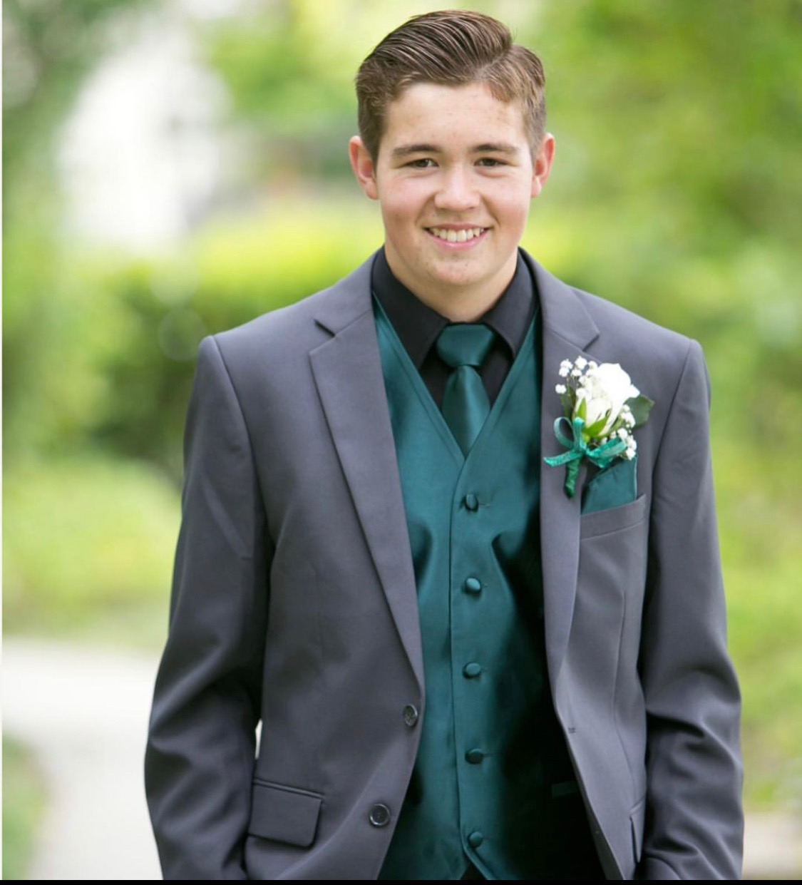

My name is Aidan larson, i'm from Mountain House Ca, which is a small town in Northern Ca about 30 miles east of sanfransisco. I come from a family of 5 kids and I am the second oldest. My older sister is 21 and also attends BYUI. Then I am 18 years old and in my first semester, my other sister is 15. I have one brother who is 13 and then my youngest sister is 10 years old. I have not decided yet on a major so for now I am just exploring and trying to figure out what interests me. I like to play many sports, in high school I played soccer, swim, and waterpolo. My favorite sports are probably waterpolo and basketball, although I do enjoy soccer. I see many advantages to this class and being able to learn more about technology and careers in web design because it allows me and teaches me all sorts of things that I otherwise wouldnt ever know about. With todays world everything has to do with technology so it is very nice to have an oppurtunity to develop my skills in this area. I have been a member of the church my entire life. I also really enjoy cars, talking and working on them. I have worked on many different types of cars, everything from drift cars to trucks and offroad vehicles. So that being said one of my favorite quotes from a leader of the church is, "The Church is not an automobile showroom - a place to put ourselves on display so that others can admire our spirituality, capacity, or prosperity. It is more like a service center, where vehicles in need of repair come for maintenance and rehabilitation."-Deiter F. Uchtdorf
